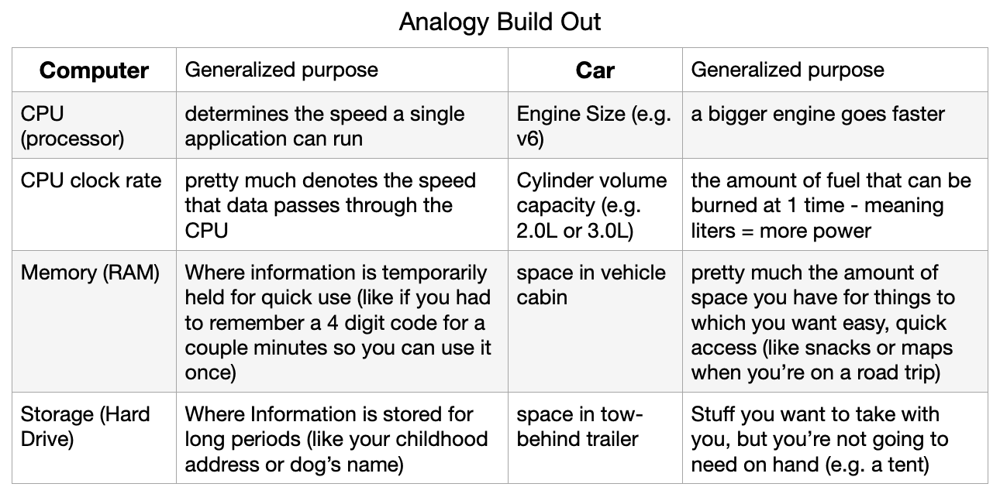

eco-Electronics Blog
How To Choose The BEST Computer For YOU
Tags: Apple, choosing a computer, apple by design, computer specs, comparing specs, howto
This is one of those topics that is really easy to get very heavy, very quickly. For all of our sakes, I’ll not do that. Instead, I’ll start with an analogy to help explain the main specs. Then, I’ll offer guidelines that will be useful the next time you or a family member/friend needs to get a computer.
Quick Note: I’m going to reference Apple components in this when referencing the CPU, but the ideas are applicable to any computer.
Analogy: This analogy will be imperfect, but I have found it very useful to quickly get an idea of what the specs are all about.


*note: the graphics card can be an important component for certain use cases, but because most users will not need to evaluate this I’ve left it off. *Also, I’m not sure how to fit it into the analogy.
With this knowledge we can compare between computers, but that isn’t very useful because we want to know which is best for our needs. With that in mind, I’m going to offer a few ideas and briefly explain the thinking.

If you have questions
or you want to learn how BDIT Electronics can help you save thousands on computers & TVs reach out to us! We're Here To HelpHow To Open An Unknown Application for Apple Desktops
Tags: open applications, desktops, system preferences, bypass default, tips&tricks, productivity
If you have questions
or you want to learn how BDIT Electronics can help you save thousands on computers & TVs reach out to us! We're Here To Help
Shortcut To Success (...at least for Apple Computers)
Tags: Apple shortcuts, tips&tricks, workflow, productivity
With the school season back in session and the job market opening back up we’ve seen a lot of our favorite people picking up Macbooks. As a long-time Apple computer user I’ve picked up a number of fun tips and tricks that I now use fluently, boosting my productivity by leaps and bounds.
With this in mind, I thought that for our inaugural blog post I’d make a list of my favorite short-cuts that I think dramatically boost my productivity. My thought is that I’ll put my top 4 in bold and then list out the rest below. If I get a strong response asking me to build on this list or further breakdown the ‘How To’ explanations I’ll be happy to take the time to do it.
Quick Note: the words in ( ) are what you press. Anything outside of that are just to help me explain what to do. For example, the + symbol is used to show that you press the buttons in the ( ) down at the same time.
Without further ado:
1. ( cmd ) + ( spacebar ) - this allows you to search your entire computer and apple gives the “best” option
**NOTE: Press the ‘esc’ button at the top left of your laptop keyboard to close the search bar. You can also just click somewhere else on the screen.
2. ( cmd ) + ( tab ) - This allows you to switch between applications. For example, if you’re looking at your email and you have your browser open - e.g. Google Chrome or Safari - you can quickly switch back and forth between the two.
**NOTE: this will choose the last used application. If you want to choose a different open application, hold the (cmd) button and press (tab) as many times as needed to highlight the application you wish to choose.
3. On Trackpad: 3 finger swipe UP: This allows you to look at all the windows you have open on your computer at the same time! Now, hover over and click on the window you’d like to view.
4. On Trackpad: 3 finger swipe DOWN This allows you to view all of the windows open in the same application ( e.g. if you have 3 windows open on your of Safari browser only those 3 windows would be displayed for you to choose from ).
**NOTE: This last one will only work if it is enabled in your settings (this may be worth a seperate post). For those interested, you can find it here by following the following steps: apple logo (top left of your screen)> system preferences > trackpad > more gestures > app expose checkbox
Bonus Shortcuts
-
( cmd ) + (shift) + ( 3 )- screen shot of entire screen -
( cmd ) + (shift) + ( 4 ); + (click and drag)- screen shot of selected area
** All screen shots will go directly to your desktop - On Trackpad:
3 finger swipe LEFT / RIGHT- switches between desktop screens - On Trackpad:
4 finger pinch IN- opens Launchpad (a clean looking space that contains all the Applications on your computer) - On Trackpad:
4 finger pinch OUT- shortcut to desktop -
( cmd ) + ( , )- opens preferences on many applications -
( cmd ) + ( ` )- change windows within an application -
( cmd ) + ( p )- prints screen
Basic Shortcuts
( cmd ) + ( c )- copies highlighted text( cmd ) + ( v )- pastes whatever you just copied( cmd ) + ( z )- undoes your last action( cmd ) + ( k )- creates a clickable link
**This only works in certain applications like Apple Mail, Pages, Keynote( cmd ) + ( u )- underlines highlighted text( cmd ) + ( i )- italicizes highlighted text( cmd ) + ( o )- opens a previously saved file( cmd ) + ( n )- opens a new file( cmd ) + ( m )- minimizes an existing window( cmd ) + ( w )- allows you to close an open window